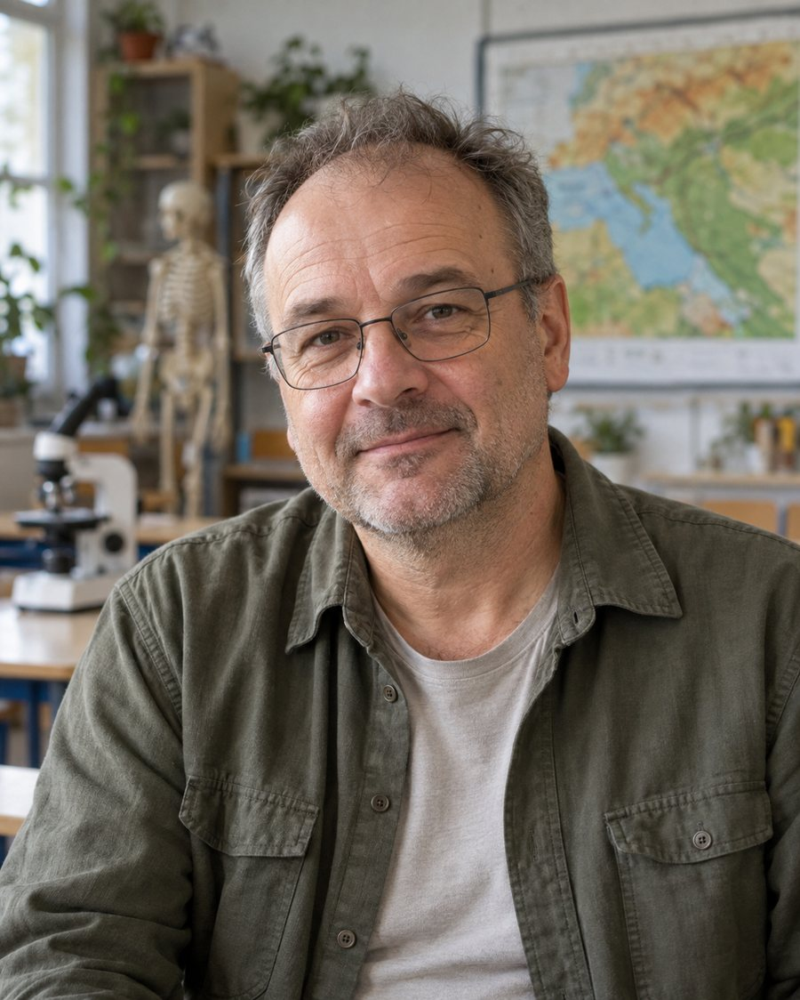

Persona kártya · Kutatótér

a kutató szemléletű természettudomány-tanár
Csaba óráin a tanulók gyakran kísérleteznek, megfigyelnek vagy modelleket készítenek. Fontos számára, hogy a diákok saját tapasztalaton keresztül értsék meg a természeti jelenségeket. Gyakran dolgoznak csoportokban, de előfordul egyéni kutatómunka is. Szereti, ha a tanterem inkább egy kis kutatóhelyre hasonlít.
Tanítási filozófia
„A természetet nem lehet csak könyvből megérteni.”
Olyan termet szeretnék, ahol a kísérlet nem rendkívüli esemény, hanem a hétköznap része. Elég hely kell a munkaasztalok körül ahhoz, hogy hatan is odaférjenek és mindenki lásson is valamit, és legyen hol hagyni a félbehagyott megfigyelést a következő óráig. A falon a diákjaim saját méréseit szeretném látni, nem nyomtatott posztereket.
Tervezési kihívás
Tervezzenek olyan tanulási környezetet, amely egyszerre labor, kutatóhely és csoportos tanulási tér.